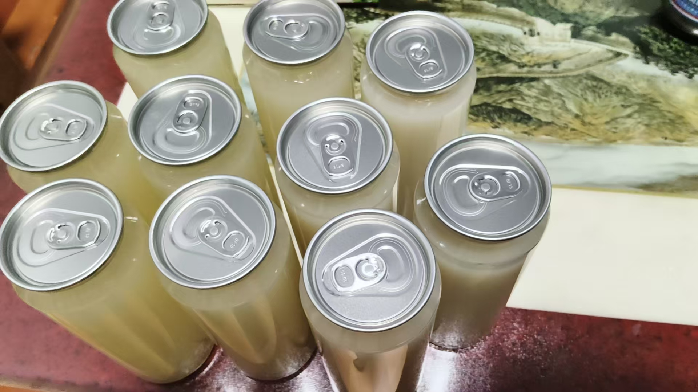
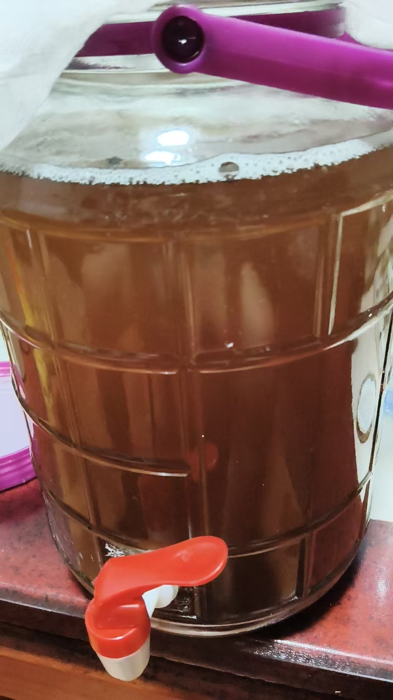
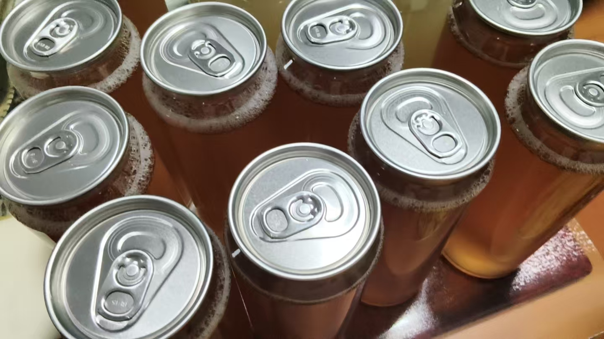

20261001菩萨成就，佛成就的路子，跟我小时候修法一样
风水布局 原始对话记录
[呲牙][呲牙][呲牙]
米酒做成易拉罐了
做着玩
反正是越做越有经验
一会把红茶菌也灌几瓶
要做好消毒杀菌哈。

瓶子蒸过了
我做，都是很小心，认真的
[憨笑][憨笑]
有点点心理障碍
红茶菌一直喝
总觉着太岁
也不是说不卫生，就是咽不下去[呲牙][呲牙]

十瓶
完成了
再买两个三十斤的瓶子，养红茶菌
我这边人多[呲牙][呲牙]
突然感觉，读完华严经，境界也提升了，好像换了另一种活法
八十华严都重复着，不急着读
@紫鸢真人 又到几维空间
主要是了解了，菩萨成就，佛成就的路子，跟我小时候修法一样
这就放心了
这几天我带修行，直接到玄女大殿
读完经，再去拜访华严宗，看他们的修法
看见龙与凤
@谢芳玲 [呲牙][呲牙]
去那里，修的快
高维修法
是现代名词
哈哈，好玩
他们玩的不亦乐乎
有没有弄清楚，龙跟凤凰，是不是消失的古动物
[憨笑][憨笑]
姑姑，我打完坐了，我看到有那个，有一条龙和还有一条缝，在玄女大殿中，还有。那些衣冠整洁的那个人。我还看见那个，我还看见有一个那个一个炉子，然后呢，它上面它画了一些东西，我还我还看着那个都是那个都是紫的那个光。整个那个大殿里面，我看见有那个，我看见有那个，有一个画着八卦的那样一个东西，但不知道是什么黑白的。
跟我修行一个孩子
嗯嗯
很有灵性
是啊，
光从皮肤毛孔射粒子
读华严经与"菩萨成就、佛成就的路子"
一、本页在讲什么
本页是日常加修学的混合记录：一头讲灌米酒、养红茶菌、消毒杀菌，说"读完华严经，境界也提升了，好像换了另一种活法"；另一头说"了解了菩萨成就、佛成就的路子，跟我小时候修法一样，这就放心了"，还提到带修行"直接到玄女大殿""看见龙与凤"。把日常琐事与修学体会混记，是本页的典型风格。
二、华严经所说的"成就路子"
《华严经》以善财童子参学为主线，把菩萨从发心到成佛的次第铺开。通常归纳为：十信→十住→十行→十回向→十地→等觉→妙觉，共五十二位，故华严被誉为"经中之王"。这一位次说，是华严"因该果海、果彻因源"次第观的具体展开。
| 阶位 | 大意 |
|---|---|
| 十信 | 建立信心 |
| 十住 | 安住菩提心 |
| 十行 | 依行利他 |
| 十回向 | 回向众生与菩提 |
| 十地 | 逐地增胜，近于佛果 |
| 等觉、妙觉 | 等觉近佛，妙觉成佛 |
三、记录者的体会
记录者说华严"境界提升""知道了成就的路子就放心"，这是个人读经感受，也解释了本集群为何反复把华严读作"心法细节"（见《心法 华严经》《华严经，活脱脱一个咱们心法修炼的细节》）。
四、"高维修法"与现代名词
同页有人提到"高维修法"，记录者答"高维修法，是现代名词"。把传统修学套上"高维"这类科幻化说法，是本页的通俗表达，读者留意词义即可。"高维""维度"本是数学、物理概念，被移用到修学描述上，属近年的通俗说法。
五、日常部分的一点提醒
页面花了不少笔墨讲自制米酒、红茶菌，还强调"要做好消毒杀菌"。家庭自酿、发酵须注意卫生与食品安全，操作不当可能引起身体不适。
六、常见问题
问："菩萨成就、佛成就的路子"是具体法门吗？ 它指经中所说的修学次第（位次），不是某一套操作步骤。
问：读完经就"换了活法"？ 那是记录者的主观感受，不作普遍结论。
七、提醒
- 本页属日常随笔加读经自述；
- 自酿发酵品注意安全卫生，不适即停；
- 修行内容按传统文化的角度阅读。